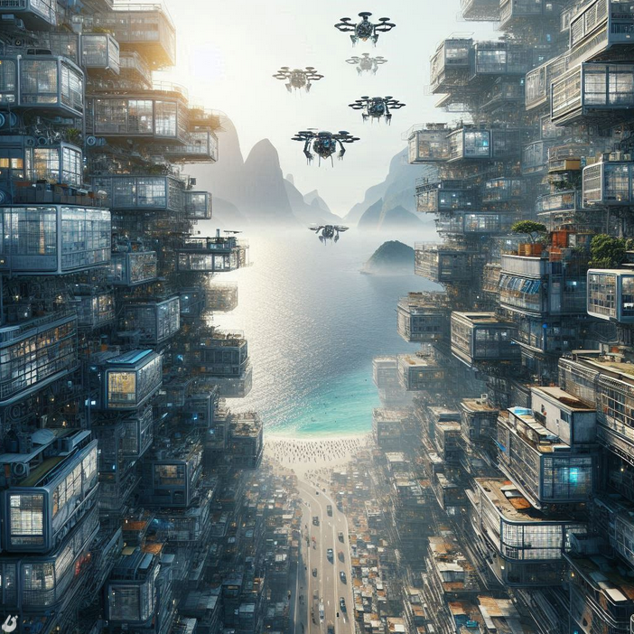
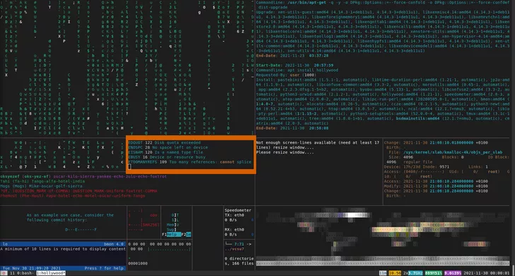

Chegou a hora de nos erguermos em uníssono, de nos unirmos como um rio impetuoso de
resistência contra as correntes opressivas que tentam nos arrastar para as profundezas da servidão.
Neste cenário sombrio e cruel que é o Rio de Janeiro de 2087, nossa cidade é mais do que concreto e aço; é
um labirinto de almas, uma teia de histórias entrelaçadas, e é nossa obrigação protegê-la da ganância e da
tirania que se infiltram em cada fio da nossa existência.
Desde as sombras da Baía de Guanabara até os altos arranha-céus cintilantes da Zona Central, somos a
essência pulsante desta metrópole que suga nossa vidas.
Somos os marginalizados, os renegados, os esquecidos pelo sistema. Mas em nossa marginalidade, encontramos
força. Em nossa diversidade, encontramos unidade. Em nossa resistência, encontramos esperança.
Hoje, convoco todos vocês, seja você um hacker escondido nas entranhas da rede, um mercenário com um coração
rebelde, um artista de rua que transforma a desolação em beleza ou um cidadão comum cansado de ser oprimido.
Ergam-se das sombras! Chegou a hora de defendermos nossa liberdade, nossa autonomia e nossa humanidade.
Não mais seremos silenciados pelos megacorporações que exploram nossos recursos e nossas vidas em nome do
lucro. Não mais seremos subjugados pelos políticos corruptos que enchem os bolsos à custa do nosso
sofrimento. Não mais seremos vítimas da injustiça e da desigualdade que corroem os pilares da nossa
sociedade.
Hoje, declaramos nossa independência. Hoje, reivindicamos nosso direito de existir além das margens
estreitas que tentam nos conter. Hoje, marchamos juntos, como uma correnteza imparável, rumo a um futuro
onde a liberdade é mais do que uma palavra vazia, é uma realidade tangível para todos.
Seja você um hacker, um mercenário, um artista ou um cidadão comum, sua voz é necessária, sua coragem é
essencial e sua determinação é nossa maior arma. Junte-se a nós, pois juntos somos mais fortes. Juntos,
podemos desafiar os poderes opressivos que tentam nos dominar. Juntos, podemos construir um amanhã melhor,
onde cada um de nós possa prosperar, livre da sombra da opressão.
Nos encontraremos nas ruas, nos becos escuros e nas vielas esquecidas. Nos encontraremos na rede, nos
lugares mais secretos e nas profundezas insondáveis do ciberespaço. Nos encontraremos onde quer que a
esperança floresça e a resistência persista.
Por Trilha Rede Fugitivo, pelo Rio de Janeiro, pela liberdade!
Que nossa rebelião ecoe através dos séculos, como um eco eterno na vastidão do universo digital.
Juntos, somos invencíveis.
Assinando esta entrada com a esperança de que o amanhã livre está cada vez mais próximo.
StealthCode